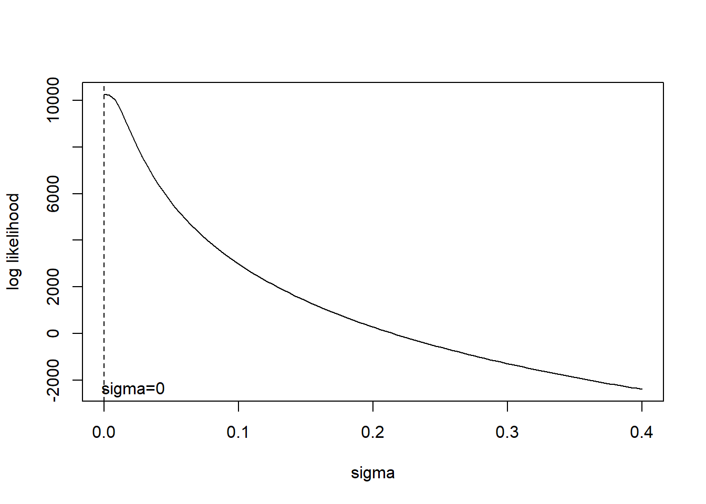
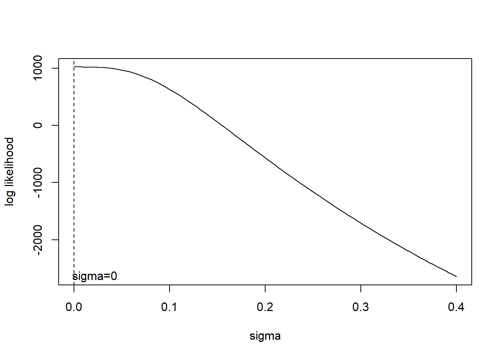
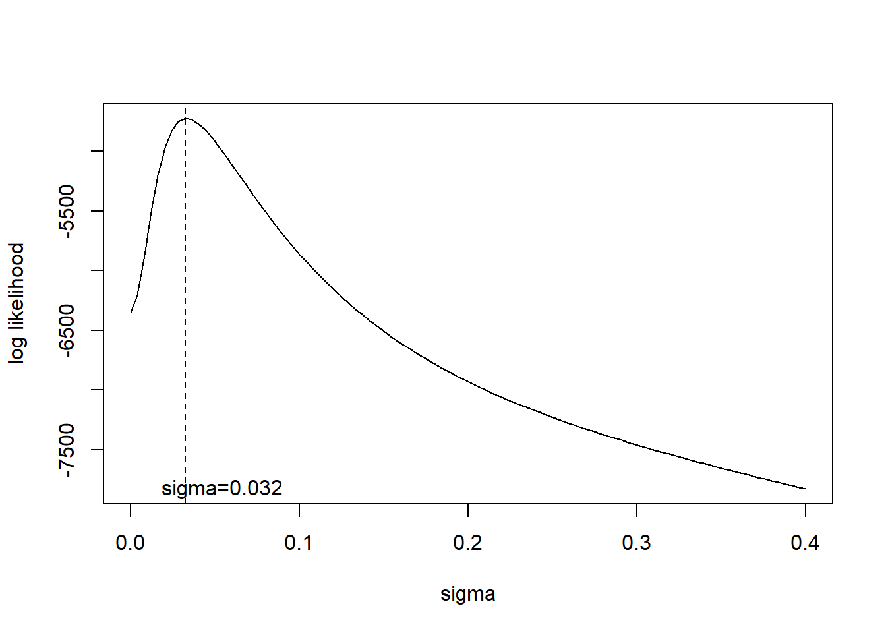
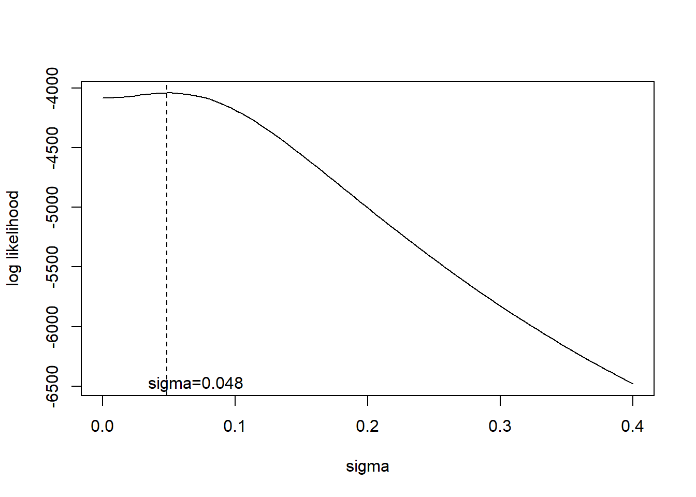

Last updated: 2020-09-13
Checks: 7 0
Knit directory: dear/
This reproducible R Markdown analysis was created with workflowr (version 1.6.2). The Checks tab describes the reproducibility checks that were applied when the results were created. The Past versions tab lists the development history.
Great! Since the R Markdown file has been committed to the Git repository, you know the exact version of the code that produced these results.
Great job! The global environment was empty. Objects defined in the global environment can affect the analysis in your R Markdown file in unknown ways. For reproduciblity it’s best to always run the code in an empty environment.
The command set.seed(20200403) was run prior to running the code in the R Markdown file. Setting a seed ensures that any results that rely on randomness, e.g. subsampling or permutations, are reproducible.
Great job! Recording the operating system, R version, and package versions is critical for reproducibility.
Nice! There were no cached chunks for this analysis, so you can be confident that you successfully produced the results during this run.
Great job! Using relative paths to the files within your workflowr project makes it easier to run your code on other machines.
Great! You are using Git for version control. Tracking code development and connecting the code version to the results is critical for reproducibility.
The results in this page were generated with repository version 23a17f0. See the Past versions tab to see a history of the changes made to the R Markdown and HTML files.
Note that you need to be careful to ensure that all relevant files for the analysis have been committed to Git prior to generating the results (you can use wflow_publish or wflow_git_commit). workflowr only checks the R Markdown file, but you know if there are other scripts or data files that it depends on. Below is the status of the Git repository when the results were generated:
Ignored files:
Ignored: .Rhistory
Ignored: .Rproj.user/
Untracked files:
Untracked: analysis/mash_diagonal.Rmd
Untracked: analysis/mash_mean.Rmd
Untracked: data/bulk_cytokin_SI.RData
Untracked: output/PLNfit_bulk_cytokin_SI.RData
Untracked: output/PLNfit_bulk_cytokin_SI_1_30.RData
Untracked: output/pln_simu_denseSigma_plnFit.RData
Untracked: output/pln_simu_diagSigma01.RData
Untracked: output/pln_simu_diagSigma_plnFit.RData
Note that any generated files, e.g. HTML, png, CSS, etc., are not included in this status report because it is ok for generated content to have uncommitted changes.
These are the previous versions of the repository in which changes were made to the R Markdown (analysis/diagonal_mvebnm.Rmd) and HTML (docs/diagonal_mvebnm.html) files. If you’ve configured a remote Git repository (see ?wflow_git_remote), click on the hyperlinks in the table below to view the files as they were in that past version.
| File | Version | Author | Date | Message |
|---|---|---|---|---|
| Rmd | 23a17f0 | DongyueXie | 2020-09-13 | wflow_publish(“analysis/diagonal_mvebnm.Rmd”) |
In my previous example, I found that using data driven covariance matrices from ED in prior results in high fdp, mainly due to small lfsr/lfdr. One reason is that there’s uncertainty in estimated covaraince matrices but we did not take it into consideration. Matthew suggested adding a diagonal term into model, see if it could deal with the issue.
The model is \[x_i\sim \sum_k\pi_k N(0,U_k+S_i),\] where \(S_i\) is known, and the simplest way to add diagonal term is to add the same one to every mixture component, \[x_i\sim \sum_k\pi_kN(0,U_k+S_i+\sigma^2 I).\]
The \(\sigma^2\) can be estimated by MLE but we suspect it will be estimated as 0 often. Before we derive the model, we first do a quick check suggested by Matthew. We first obtain estimates of \(\pi_k,U_k\) from ED(without diagonal term) and fix them, then add \(\sigma^2I\), calculate log likelihood, and plot log-lik vs \(\sigma^2\). The log likelihood is \[\log L(X) = \sum_i\log(\sum_k\pi_k N(x_i;0,U_k+S_i+\sigma^2 I)).\]
(should diagonal term be added to only data-driven ones or also canonical ones?)
library(mashr)Warning: package 'mashr' was built under R version 4.0.2Loading required package: ashrlibrary(mvtnorm)
simple_sims2 = function (nsamp = 100, err_sd = 0.01){
ncond = 5
b1 = rnorm(nsamp)
B.1 = matrix(cbind(b1, b1, 0, 0, 0), nrow = nsamp, ncol = ncond)
b2 = rnorm(nsamp)
B.2 = matrix(cbind(0, 0, b2, b2, b2), nrow = nsamp, ncol = ncond)
B.id = matrix(rnorm(nsamp * ncond), nrow = nsamp, ncol = ncond)
B.zero = matrix(0, nrow = nsamp, ncol = ncond)
B = rbind(B.zero,B.id,B.1, B.2)
Shat = matrix(err_sd, nrow = nrow(B), ncol = ncol(B))
E = matrix(rnorm(length(Shat), mean = 0, sd = Shat), nrow = nrow(B),
ncol = ncol(B))
Bhat = B + E
row_ids = paste0("effect_", 1:nrow(B))
col_ids = paste0("condition_", 1:ncol(B))
rownames(B) = row_ids
colnames(B) = col_ids
rownames(Bhat) = row_ids
colnames(Bhat) = col_ids
rownames(Shat) = row_ids
colnames(Shat) = col_ids
U = matrix(0,nrow=ncond,ncol=ncond)
U2 = U
U2[1:2,1:2] = 1
U3 = U
U3[3:5,3:5] = 1
U.true = list(U1 = matrix(0,nrow=ncond,ncol=ncond),
U2=U2,
U3=U3,
U4 = diag(ncond))
return(list(B = B, Bhat = Bhat, Shat = Shat,U.true=U.true))
}
fdp = function(dis.idx, true.idx){
if(length(dis.idx)==0){
0
}else{
1-mean(dis.idx%in%true.idx)
}
}
auc = function(pred,true.label){
auc=pROC::roc(response = true.label, predictor = pred,direction = '<',levels = c(0,1))
auc$auc
}
powr = function(dis.idx, true.idx){
if(length(dis.idx)==0){
0
}else{
sum(dis.idx%in%true.idx)/length(true.idx)
}
}
mse = function(x,y){
mean((x-y)^2)
}
simu_study = function(simdata,thresh = 0.1){
data = mash_set_data(simdata$Bhat,simdata$Shat)
m.1by1 = mash_1by1(data)
strong = get_significant_results(m.1by1)
U.c = cov_canonical(data)
U.pca = cov_pca(data,5,strong)
U.ed = cov_ed(data,U.pca,strong)
U.ed.sparse = lapply(U.ed,
function(z){z = z/max(diag(z))
idx = which(abs(z)<thresh)
if(length(idx)!=0){
z[idx] = 0
}
z})
U.true = simdata$U.true
m.c = mash(data, U.c,verbose = F)
m.ed = mash(data, U.ed,verbose = F)
m.c.ed = mash(data, c(U.c,U.ed),verbose = F)
m.c.ed.sparse = mash(data, c(U.c,U.ed.sparse),verbose = F)
m.true = mash(data, U.true,verbose = F)
out = list(m.c=m.c,m.ed=m.ed,m.c.ed=m.c.ed,m.c.ed.sparse=m.c.ed.sparse,m.true=m.true)
out
}
n_conditions = function(data){ncol(data$Bhat)}
n_effects = function(data){nrow(data$Bhat)}
bovy_wrapper = function(data, Ulist_init, subset=NULL, ...){
if(is.null(subset)){subset = 1:n_effects(data)}
K = length(Ulist_init)
R = n_conditions(data)
pi_init = rep(1/K, K) # initial mix proportions
D = ncol(data$V)
if(all(data$V==diag(D))){
ed.res = extreme_deconvolution(data$Bhat[subset,],
data$Shat[subset,]^2,
xamp = pi_init,
xmean = matrix(0,nrow=K,ncol=R),
xcovar = Ulist_init,
fixmean = TRUE,
...)
}else{
if(!is.null(data$L)){
ycovar = lapply(subset, function(i) data$L %*% (data$Shat_orig[i,] * t(data$V * data$Shat_orig[i,])) %*% t(data$L) )
}else{
ycovar = lapply(subset, function(i) data$Shat[i,] * t(data$V * data$Shat[i,]) )
}
ed.res = extreme_deconvolution(data$Bhat[subset,],
ycovar,
xamp = pi_init,
xmean = matrix(0,nrow=K,ncol=R),
xcovar = Ulist_init,
fixmean = TRUE,
...)
}
return(list(pi = ed.res$xamp, Ulist = ed.res$xcovar, av_loglik = ed.res$avgloglikedata))
}
calc_loglikx = function(data,subset,pihat,Ulist,sigma){
n = length(subset)
loglik = 0
for(i in subset){
loglik = loglik + mixture_loglikx(data$Bhat[i,],data$Shat[i,],pihat,Ulist,sigma)
}
loglik
}
mixture_loglikx = function(x,shat,pihat,Ulist,sigma){
K = length(pihat)
p = length(x)
lik = 0
for(k in 1:K){
#browser()
lik = lik + pihat[k]*dmvnorm(x,sigma = Ulist[[k]]+diag(shat^2)+sigma^2*diag(p))
}
log(lik)
}Now we generate data from a mixture of 2 MVN with the following covariance matrices: present (and identical) in first two conditions, present (and identical) in last three conditions, each with 500 samples(so \(\pi_1=\pi_2=0.5\)), and \(s_i=0.01\).
cov1 = c(1,1,0,0,0)%*%t(c(1,1,0,0,0))
cov2 = c(0,0,1,1,1)%*%t(c(0,0,1,1,1))
print(cov1) [,1] [,2] [,3] [,4] [,5]
[1,] 1 1 0 0 0
[2,] 1 1 0 0 0
[3,] 0 0 0 0 0
[4,] 0 0 0 0 0
[5,] 0 0 0 0 0print(cov2) [,1] [,2] [,3] [,4] [,5]
[1,] 0 0 0 0 0
[2,] 0 0 0 0 0
[3,] 0 0 1 1 1
[4,] 0 0 1 1 1
[5,] 0 0 1 1 1simple_sims0 = function(nsamp = 100, err_sd = 0.01){
ncond = 5
b1 = rnorm(nsamp)
B.1 = matrix(cbind(b1, b1, 0, 0, 0), nrow = nsamp, ncol = ncond)
b2 = rnorm(nsamp)
B.2 = matrix(cbind(0, 0, b2, b2, b2), nrow = nsamp, ncol = ncond)
#B.id = matrix(rnorm(nsamp * ncond), nrow = nsamp, ncol = ncond)
#B.zero = matrix(0, nrow = nsamp, ncol = ncond)
B = rbind(B.1, B.2)
Shat = matrix(err_sd, nrow = nrow(B), ncol = ncol(B))
E = matrix(rnorm(length(Shat), mean = 0, sd = Shat), nrow = nrow(B), ncol = ncol(B))
Bhat = B + E
row_ids = paste0("effect_", 1:nrow(B))
col_ids = paste0("condition_", 1:ncol(B))
rownames(B) = row_ids
colnames(B) = col_ids
rownames(Bhat) = row_ids
colnames(Bhat) = col_ids
rownames(Shat) = row_ids
colnames(Shat) = col_ids
U = matrix(0,nrow=ncond,ncol=ncond)
U2 = U
U2[1:2,1:2] = 1
U3 = U
U3[3:5,3:5] = 1
U.true = list(#U1 = matrix(0,nrow=ncond,ncol=ncond),
U2=U2,
U3=U3)
#U4 = diag(ncond))
return(list(B = B, Bhat = Bhat, Shat = Shat,U.true=U.true))
}
set.seed(12345)
simdata = simple_sims0(500,err_sd = 0.01)
data = mash_set_data(simdata$Bhat,simdata$Shat)
#m.1by1 = mash_1by1(data)
#strong = get_significant_results(m.1by1)
strong = 1:nrow(simdata$B)
U.c = cov_canonical(data)
U.pca = cov_pca(data,5,strong)
ed.out = bovy_wrapper(data,U.pca,strong)
l = 100
sigma_seq = seq(0,0.4,length.out = l)
llik = c()
for(i in 1:l){
#print(i)
llik[i] = calc_loglikx(data,strong,ed.out$pi,ed.out$Ulist,sigma_seq[i])
}
plot(sigma_seq,llik,type='l',xlab = 'sigma',ylab='log likelihood')
abline(v = sigma_seq[which.max(llik)],lty=2)
text(x = sigma_seq[which.max(llik)]+0.022,y = min(llik), labels=paste('sigma=',round(sigma_seq[which.max(llik)],3),sep = ''))
sigma_seq[which.min(abs(llik[1]/2-llik))][1] 0.05656566Log likelihood peaks at \(\sigma=0\). In this example, \(l(\sigma=0;X)\approx 2\times l(\sigma=0.0566;X)\).
Now let’s increase \(s_i\) to \(0.1\).
simdata = simple_sims0(500,err_sd = 0.1)
data = mash_set_data(simdata$Bhat,simdata$Shat)
#m.1by1 = mash_1by1(data)
#strong = get_significant_results(m.1by1)
strong = 1:nrow(simdata$B)
U.c = cov_canonical(data)
U.pca = cov_pca(data,5,strong)
ed.out = bovy_wrapper(data,U.pca,strong)
l = 100
sigma_seq = seq(0,0.4,length.out = l)
llik = c()
for(i in 1:l){
#print(i)
llik[i] = calc_loglikx(data,strong,ed.out$pi,ed.out$Ulist,sigma_seq[i])
}
plot(sigma_seq,llik,type='l',xlab = 'sigma',ylab='log likelihood')
abline(v = sigma_seq[which.max(llik)],lty=2)
text(x = sigma_seq[which.max(llik)]+0.022,y = min(llik), labels=paste('sigma=',round(sigma_seq[which.max(llik)],3),sep = ''))
sigma_seq[which.min(abs(llik[1]/2-llik))][1] 0.1131313Log likelihood peaks at \(\sigma=0\). In this example, \(l(\sigma=0;X)\approx 2\times l(\sigma=0.113;X)\).
Now we generate data from a mixture of 4 MVN with the following covariance matrices: pointmass, identity, present (and identical) in first two conditions, present (and identical) in last three conditions, each with 500 samples(so \(\pi_1=\pi_2=\pi_3=\pi_4=0.25\)), and \(s_i=0.01\).
We first run ash 1by1 to identify samples are have strong signals(ideally total 500*3=1500 samples), then run ED on these “strong” samples.
set.seed(12345)
simdata = simple_sims2(500,err_sd = 0.01)
#result = simu_study(simdata)
data = mash_set_data(simdata$Bhat,simdata$Shat)
m.1by1 = mash_1by1(data)
strong = get_significant_results(m.1by1)
U.c = cov_canonical(data)
U.pca = cov_pca(data,5,strong)
ed.out = bovy_wrapper(data,U.pca,strong)
#U.ed = cov_ed(data,U.pca,strong)
#out = summary_out(simdata$B,result)
#knitr::kable(out$find_genes,caption = 'On finding genes',digits = 3)
#knitr::kable(out$find_cond,caption = 'On finding conditions',digits = 3)
l = 100
sigma_seq = seq(0,0.4,length.out = l)
llik = c()
for(i in 1:l){
print(i)
llik[i] = calc_loglikx(data,strong,ed.out$pi,ed.out$Ulist,sigma_seq[i])
}[1] 1
[1] 2
[1] 3
[1] 4
[1] 5
[1] 6
[1] 7
[1] 8
[1] 9
[1] 10
[1] 11
[1] 12
[1] 13
[1] 14
[1] 15
[1] 16
[1] 17
[1] 18
[1] 19
[1] 20
[1] 21
[1] 22
[1] 23
[1] 24
[1] 25
[1] 26
[1] 27
[1] 28
[1] 29
[1] 30
[1] 31
[1] 32
[1] 33
[1] 34
[1] 35
[1] 36
[1] 37
[1] 38
[1] 39
[1] 40
[1] 41
[1] 42
[1] 43
[1] 44
[1] 45
[1] 46
[1] 47
[1] 48
[1] 49
[1] 50
[1] 51
[1] 52
[1] 53
[1] 54
[1] 55
[1] 56
[1] 57
[1] 58
[1] 59
[1] 60
[1] 61
[1] 62
[1] 63
[1] 64
[1] 65
[1] 66
[1] 67
[1] 68
[1] 69
[1] 70
[1] 71
[1] 72
[1] 73
[1] 74
[1] 75
[1] 76
[1] 77
[1] 78
[1] 79
[1] 80
[1] 81
[1] 82
[1] 83
[1] 84
[1] 85
[1] 86
[1] 87
[1] 88
[1] 89
[1] 90
[1] 91
[1] 92
[1] 93
[1] 94
[1] 95
[1] 96
[1] 97
[1] 98
[1] 99
[1] 100plot(sigma_seq,llik,type='l',xlab = 'sigma',ylab='log likelihood')
abline(v = sigma_seq[which.max(llik)],lty=2)
text(x = sigma_seq[which.max(llik)]+0.022,y = min(llik), labels=paste('sigma=',round(sigma_seq[which.max(llik)],3),sep = ''))
Now let’s increase \(s_i\) to \(0.1\).
simdata = simple_sims2(500,err_sd = 0.1)
#result = simu_study(simdata)
data = mash_set_data(simdata$Bhat,simdata$Shat)
m.1by1 = mash_1by1(data)
strong = get_significant_results(m.1by1)
U.c = cov_canonical(data)
U.pca = cov_pca(data,5,strong)
ed.out = bovy_wrapper(data,U.pca,strong)
#U.ed = cov_ed(data,U.pca,strong)
#out = summary_out(simdata$B,result)
#knitr::kable(out$find_genes,caption = 'On finding genes',digits = 3)
#knitr::kable(out$find_cond,caption = 'On finding conditions',digits = 3)
l = 100
sigma_seq = seq(0,0.4,length.out = l)
llik = c()
for(i in 1:l){
print(i)
llik[i] = calc_loglikx(data,strong,ed.out$pi,ed.out$Ulist,sigma_seq[i])
}[1] 1
[1] 2
[1] 3
[1] 4
[1] 5
[1] 6
[1] 7
[1] 8
[1] 9
[1] 10
[1] 11
[1] 12
[1] 13
[1] 14
[1] 15
[1] 16
[1] 17
[1] 18
[1] 19
[1] 20
[1] 21
[1] 22
[1] 23
[1] 24
[1] 25
[1] 26
[1] 27
[1] 28
[1] 29
[1] 30
[1] 31
[1] 32
[1] 33
[1] 34
[1] 35
[1] 36
[1] 37
[1] 38
[1] 39
[1] 40
[1] 41
[1] 42
[1] 43
[1] 44
[1] 45
[1] 46
[1] 47
[1] 48
[1] 49
[1] 50
[1] 51
[1] 52
[1] 53
[1] 54
[1] 55
[1] 56
[1] 57
[1] 58
[1] 59
[1] 60
[1] 61
[1] 62
[1] 63
[1] 64
[1] 65
[1] 66
[1] 67
[1] 68
[1] 69
[1] 70
[1] 71
[1] 72
[1] 73
[1] 74
[1] 75
[1] 76
[1] 77
[1] 78
[1] 79
[1] 80
[1] 81
[1] 82
[1] 83
[1] 84
[1] 85
[1] 86
[1] 87
[1] 88
[1] 89
[1] 90
[1] 91
[1] 92
[1] 93
[1] 94
[1] 95
[1] 96
[1] 97
[1] 98
[1] 99
[1] 100plot(sigma_seq,llik,type='l',xlab = 'sigma',ylab='log likelihood')
abline(v = sigma_seq[which.max(llik)],lty=2)
text(x = sigma_seq[which.max(llik)]+0.022,y = min(llik), labels=paste('sigma=',round(sigma_seq[which.max(llik)],3),sep = ''))
sessionInfo()R version 4.0.1 (2020-06-06)
Platform: x86_64-w64-mingw32/x64 (64-bit)
Running under: Windows 10 x64 (build 18362)
Matrix products: default
locale:
[1] LC_COLLATE=English_United States.1252
[2] LC_CTYPE=English_United States.1252
[3] LC_MONETARY=English_United States.1252
[4] LC_NUMERIC=C
[5] LC_TIME=English_United States.1252
attached base packages:
[1] stats graphics grDevices utils datasets methods base
other attached packages:
[1] mvtnorm_1.1-0 mashr_0.2.38 ashr_2.2-50 workflowr_1.6.2
loaded via a namespace (and not attached):
[1] Rcpp_1.0.4.6 knitr_1.28 whisker_0.4 magrittr_1.5
[5] SQUAREM_2020.3 lattice_0.20-41 R6_2.4.1 rlang_0.4.6
[9] plyr_1.8.6 stringr_1.4.0 tools_4.0.1 grid_4.0.1
[13] xfun_0.14 rmeta_3.0 irlba_2.3.3 invgamma_1.1
[17] git2r_0.27.1 htmltools_0.5.0 assertthat_0.2.1 abind_1.4-5
[21] yaml_2.2.1 digest_0.6.25 rprojroot_1.3-2 mixsqp_0.3-43
[25] Matrix_1.2-18 later_1.1.0.1 promises_1.1.0 fs_1.4.1
[29] glue_1.4.1 evaluate_0.14 rmarkdown_2.3 stringi_1.4.6
[33] compiler_4.0.1 backports_1.1.7 truncnorm_1.0-8 httpuv_1.5.4